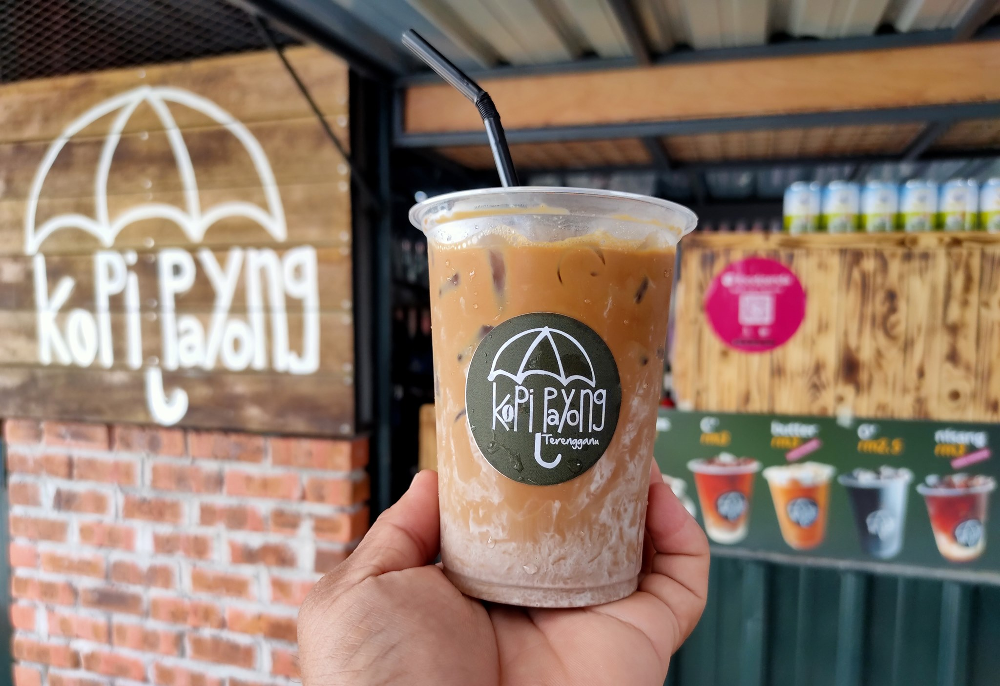

Nasi dagang is known as the nasi lemak of the east coast and is a breakfast favourite. This Terengganu food is made from a mixture of white glutinous rice, steamed in coconut milk and served with fragrant tuna curry, pickled cucumber, and carrots. Best stall to go for nasi dagang is Mak Ngah Nasi Dagang, a little stall about 2km from Kuala Ibai bridge, by the road of Chendering. Early bird always catches its meal. Nasi dagang in Mak Ngah's stall is always sold out before 11:00am. Other alternatives will be at any stalls in Kuala Terengganu which offer quite similar taste.
1. Nasi Dagang
2. Keropok Lekor
This Terengganu food is made from ground fish and formed into a sausage-like shape. Keropok lekor is either deep fried or boiled and is often served with a sweet chilli sauce. It's a typical teatime snack for the locals and can be enjoyed with or without the sauce. Fair warning—it is highly addictive!
3. Nasi Kerabu
Nasi kerabu consists of bright blue tinted rice, usually eaten with ulam, fried salted fish, fish crackers, and other garnishing. The rice is blue due to the petals of the butterfly pea flower or Clitoria ternatea (bunga telang in Malay). All the ingredients of this Terengganu food are made separately and then served together on one plate.
4. Sata
Terengganu has an abundance of fresh seafood, so there's no surprise that sata is yet another delicious fish snack native to this Malaysian state. This Terengganu food is made from spiced fish, shallots, and ginger, pounded and mixed together. The mixture is then wrapped in a banana leaf and slowly grilled over hot coal. Finding some truly authentic sata is not easy outside of Terengganu, so whenever you visit, make sure to sample this fishy delight.
5. Nekbat
Nekbat is a sweet dessert made from rice flour and eggs. The ingredients are usually mixed and poured into moulds, covered with a lid and cooked until it's spongy and cream in colour. Once it's done cooking, the plain nekbat is boiled in sugary water for a few minutes to give it a sweet taste. The sweetness of the nekbat is what makes it so delicious.
6. Kopi Payung

There are several branches of Kopi Payung inTerengganu but the most favourite is at Batu Rakit as the view is so mesmerizing. We can drink and eat waffles while enjoying the beautiful beaches by the beach. There are many choices of unique coffee from and high-quality coffee flavors that feature a well-balanced acidity, bitterness, sweetness, and mouthfeel combined with a dreamy aroma. They also serves waffles which golden-brown in color, with a crispy outer texture and a soft interiorwaffles.Taste wise, not gonna lie, they were absolutely delicious!